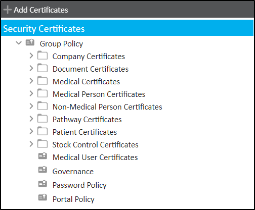
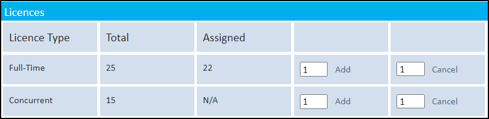
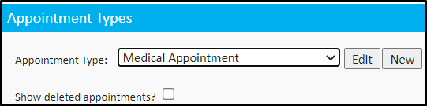
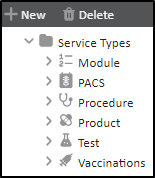
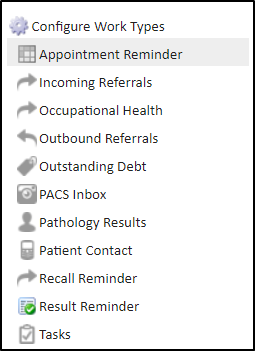
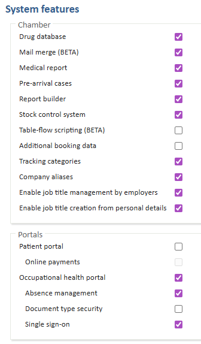

Meddbase is a complex, multi-layered EMR system, capable of accommodating a wide variety of workflows and business models ranging from small practices, straightforward setup and only a couple of people using the application, through to global enterprises with thousands of users and nuanced workflows and business requirements.
Meddbase provides a high number of configuration options allowing the application to adapt to complex business scenarios, as well as a host of default settings that it can fall back on when complexity is minimal.
Meddbase can be and is used in Primary Care, Secondary Care as well as in Occupational Health.
This article is the 1st in a series of articles providing overview and details of setup and configuration steps required for Practice Management, which focuses on the application of the Meddbase system in Primary and Secondary Care.
Click here for Part 2.
Click here for Part 3.1.
Click here for Part 3.2.
Click here for Part 4.
Click here for Part 5.
This article will provide explanation of key terms and concepts native to Meddbase that are used in this series of articles.
An organisation instance in the Meddbase application. This means, in practical terms, that on a daily basis you will be logging into your Chamber to conduct your business and your Chamber will be configurable according to your needs and will contain your data (patient records, invoices etc.).
Your company will have a demographic record (name, billing address, contact details etc.), and will serve as 'The Chamber Company', and for all intents and purposes your company is the Chamber.
The person who logs into the Meddbase application. Each user is assigned to Roles that enables them to carry out different activities.
Users are created by application administrators to assign their application permissions through Role Groups.
As a prerequisite to creation, each user needs to exist in Meddbase as either a Clinician or Non-Medical Staff which is then assigned to the user as their 'Profile'.
A group representing a category of users. Roles provide a streamlined category-based method of allowing users with different 'Roles' to perform different actions and carry out different tasks.
There are a pre-configured set of roles provided with the application that can be updated.
Typically, a Meddbase User(s) with full system access, responsible for chamber configuration following training and internal user queries. Furthermore, a Superuser has the ability to escalate issues to MMS Support via the support ticket system.
Security Policies represent the permissions that can be assigned to a user or Role Group to carry out different types of actions (mostly around principles of Create, View, Modify or Delete) with different entities.
These entities include Patients, Patient Medical Records, Documents, Appointments, Companies, Referrals, Contacts, Accounts, Invoices, Absences, Prescriptions, Cases and Policies themselves.
Policies can be applied at record level and are sometimes referred to as Certificates in their Security Policy setup or within the application at record level.
An application administrator can create or edit Security Policies and give different role groups permission to take different action in the context of a policy.

To log into a Chamber, a Meddbase user must have a license. There are 2 types of licences: Full-time and Concurrent:
For more support with Licensing, please read the following article 'Licences' and 'Seats' explained

Recipient of medical services.
In Meddbase a patient record has relationships with many other features such as appointments, documents, medical records, cases, referrals, absences, invoices, tasks, Occupational Health, contacts and companies.
The provider of clinical or medical services in Meddbase. Also referred to as a Doctor or Medical Person.
A Meddbase user who is not a medical professional, e.g. receptionist, technician operating equipment etc. Meddbase prevents non-medical users from performing certain actions, e.g. prescribing drugs.
An organisation record in the Meddbase system.
A company has a 'Company type' such as employer, insurer, internal, legal, NHS commissioner, pharmacy, practice, school.
This type impacts on how the record is consequently used and can relate to a patient.
Company records themselves can also have a range of relationships with other records such as documents, contacts, referrals, invoice and payments.
Companies can be the default payers for services for patients.
Appointment Types in Meddbase are entities that get booked into Clinician's (Doctors') sessions and occupy a certain amount of time in these sessions. In other words, Appointment Types are the 'things you book' in the system.
Each appointment type has a range of characteristics that impact on its availability for booking and behaviour through and beyond the booking process itself.
These characteristics include its default duration, default clinical form, Pre-appointment questionnaire(s) for patients, its availability for Portal booking, the associated confirmation (letter, email and/or SMS), pop-up notes for patients or doctors, the associated referral questionnaire, its availability for telemedicine (using Vidyo).
Pricing and availability of Appointment Types is determined by the configuration of Billing Rules in the chamber.
Appointment Types are setup and configured via Start Page > Admin > Appointment Admin.

Services within Meddbase are defined as anything that can be provided to patients as part of an appointment or outside of an appointment, e.g. a procedure, a products (consumable) or a test etc.
Services can not be booked on their own, they can only be added to an appointment. They can be charged for directly however, outside the context of an appointment.
Pricing and availability of Services is determined by the configuration of Billing Rules in the chamber.

Work Types enable utilising the Work section on the Start Page and allow generating and assigning Work Items to individual users and/or groups of users. The way the Work Type is configured determines the behaviour of the corresponding Work Items. Work Items are displayed to the relevant user(s) in separate inboxes labelled according to the Work Type.
Work Types include:
Work Types are setup via Start Page > Admin > Work

A container for sets of rules that define the pricing and eligibility for services for a patient.
There are some Charge Band characteristics which are set separately to the Rules. These include:
A Charge Band is applied for each patient record and company record. This can be 'default'.
A feature in Meddbase is a piece of functionality enabling performing specific actions and workflows, and fulfilling specific business needs. There are standard, built-in feature, e.g. Slot Finder, Invoicing, Billing Rules, Templates, and more. Every Meddbase chamber has these features available.
There are also System features (additional features), e.g. Report Builder, Patient Portal, Stock Control, Medication delivery, Telemedicine and more.
System features are disabled by default and need to be enabled and configured accordingly.
